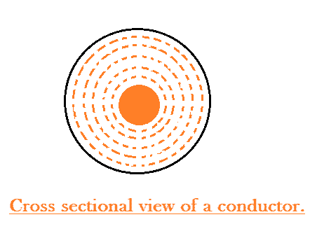

Why Skin Effect Occurs in Transmission Lines ?
Factors Affecting Skin Effect in Transmission Lines
Skin Effect
The phenomena arising due to unequal distribution of electric current over the entire cross section of the conductor being used for long distance power transmission is referred as the skin effect in transmission lines. Such a phenomena does not have much role to play in case of a very short line, but with increase in the effective length of the conductors, skin effect increases considerably. So the modifications in line calculation needs to be done accordingly.
The distribution of electric current over the entire cross section of the conductor is quite uniform in case of a DC system. But what we are using in the present era of power system engineering is predominantly an alternating electric current system, where the electric current tends to flow with higher density through the surface of the conductors (i.e skin of the conductor), leaving the core deprived of necessary number of electrons. In fact there even arises a condition when absolutely no electric current flows through the core, and concentrating the entire amount on the surface region, thus resulting in an increase in the effective electrical resistance of the conductor. This particular trend of an AC transmission system to take the surface path for the flow of electric current depriving the core is referred to as the skin effect in transmission lines.
Why Skin Effect Occurs in Transmission Lines ?
Having understood the phenomena of skin effect let us now see why this arises in case of an AC system. To have a clear understanding of that look into the cross sectional view of the conductor during the flow of alternating electric current given in the diagram below.
Let us initially consider the solid conductor to be split up into a number of annular filaments spaced infinitely small distance apart, such that each filament carries an infinitely small fraction of the total current.
Like if the total electric current = I
Lets consider the conductor to be split up into n filament carrying electric current ‘i’ such that I = n i .
Now during the flow of an alternating current, the electric current carrying filaments lying on the core has a flux linkage with the entire conductor cross section including the filaments of the surface as well as those in the core. Whereas the flux set up by the outer filaments is restricted only to the surface itself and is unable to link with the inner filaments.Thus the flux linkage of the conductor increases as we move closer towards the core and at the same rate increases the inductor as it has a direct proportionality relationship with flux linkage. This results in a larger inductive reactance being induced into the core as compared to the outer sections of the conductor. The high value of reactance in the inner section results in the electric current being distributed in an un-uniform manner and forcing the bulk of the electric current to flow through the outer surface or skin giving rise to the phenomena called skin effect in transmission lines.
Factors Affecting Skin Effect in Transmission Lines
The skin effect in an ac system depends on a number of factors like:-
1) Shape of conductor.
2) Type of material.
3) Diameter of the conductors.
4) Operational frequency.
 by
by